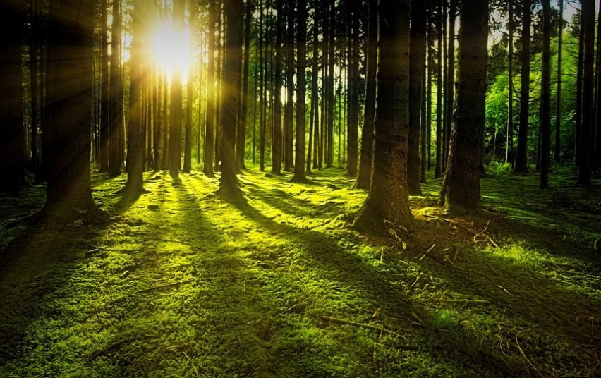

Pirmą kartą parengtą didžiausių miško savininkų Lietuvoje sąrašą sudarėme tiek remdamiesi oficialiais „Registrų centro“ duomenimis, tiek apklausę pačias įmones, miškininkus, ekspertus ir šios rinkos dalyvius.
Lietuvoje priskaičiuojama beveik 250 tūkst. miško savininkų, o vidutinė miško ūkio valda siekia vos 3,4 ha, rodo Valstybinės miškų tarnybos statistika. Tiesa, didesnius nei 500 hektarų miško sklypus valdo 58 fiziniai ir juridiniai asmenys.
Lietuvoje priskaičiuojama beveik 250 tūkst. miško savininkų, o vidutinė miško ūkio valda siekia vos 3,4 ha, rodo Valstybinės miškų tarnybos statistika. Tiesa, didesnius nei 500 hektarų miško sklypus valdo 58 fiziniai ir juridiniai asmenys.